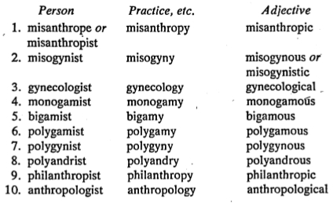

ORIGINS AND RELATED WORDS
1. depends how you turn
Introvert, extrovert, and ambivert are built on the Latin verb verto, to turn. If your thoughts are constantly turned inward (intro-), you are an introvert; outward (extro-), an extrovert; and in
both directions (ambi-), an ambivert. The prefix ambi-, both, is also found in
ambidextrous, able to use both hands with equal skill. The noun is
ambidexterity.
Dexterous means skillful, the noun dexterity is skill. The ending -ous is a common adjective suffix (famous, dangerous, perilous, etc.); -ity is a common noun suffix (vanity, quality, simplicity, etc.).
(Spelling caution: Note that the letter following the t- in ambidextrous is -r, but that in
dexterous the next letter is -e. )
Dexter is actually the Latin word for right hand—in the ambidextrous person, both hands are right hands, so to speak.
The right hand is traditionally the more skillful one; it is only within recent decades that
we have come to accept that “lefties” or “southpaws” are just as normal as anyone else— and the term left-handed is still used as a synonym of awkward.
The Latin word for the left hand is sinister. This same word, in English,
means threatening, evil, or dangerous, a further commentary on our early suspiciousness of left-handed persons. There may still be some parents who insist on forcing left-handed children to change (though left-handedness is inherited,
and as much an integral part of its possessor as eye color or nose shape), with various unfortunate results to the child—sometimes stuttering or an inability to read with normal skill.
The French word for the left hand is gauche,
and, as you would suspect, when we took this word over into English we invested it with an uncomplimentary meaning. Call someone
gauche and you imply clumsiness, generally social rather than physical. (We’re right back to our age-old misconception that left-handed people are less skillful than righthanded ones.) A gauche remark is tactless;
a gauche offer of sympathy is so bumbling as to be embarrassing; gaucherie is an awkward, clumsy, tactless, embarrassing way of saying things or of handling situations. The gauche person is totally without
finesse.
And the French word for the right hand is droit, which we have used in building our English word adroit. Needless to say, adroit, like dexterous, means skillful, but especially in the exercise of the mental
facilities. Like gauche, adroit, or its noun adroitness, usually is used figuratively. The adroit person is quickwitted, can get out of difficult spots cleverly, can handle situations ingeniously. Adroitness is, then, quite the opposite of gaucherie.
2. love, hate, and marriage
Misanthrope, misogynist, and misogamist are built on the Greek root misein, to hate. The
misanthrope hates mankind (Greek anthropos, mankind); the misogynist hates women (Greek
gyne, woman); the misogamist hates marriage (Greek gamos, marriage).
Anthropos, mankind, is also found in anthropology, the study of the development of the human race; and in philanthropist, one who loves mankind and shows such love by making substantial financial contributions
to charitable organizations or by donating time and energy to helping those in need.
The root gyne, woman, is also found in gynecologist, the medical specialist who treats female disorders. And the root gamos,
marriage, occurs also in monogamy, bigamy, and polygamy.
(As we will discover later, monos means one, bi- means two, polys means many. ) So monogamy is the custom of only one marriage
(at a time).
Bigamy, by etymology, is two marriages—in actuality, the unlawful act of contracting another marriage without divorcing one’s current legal spouse. An d polygamy, by derivation many marriages, and therefore etymologically
denoting plural marriage for either males or females, in current usage generally refers to the custom practiced in earlier times by the Mormons, and before them by King Solomon, in which the man has as many wives as he can aϱord
ϧnancially and/or emotionally. The correct, but rarely used, term for this custom is polygyny —polys, many, plus gyne, woman. What if a woman has two or more husbands, a form of marriage practiced in the Himalaya Mountains of Tibet?
That custom is called polyandry, from polys plus Greek andros, male.
3. making friends with suffixes
English words have various forms, using certain suffixes for nouns referring to persons, other suffixes for practices, attitudes, philosophies, etc, and still others for adjectives. Consider:
4. living alone and liking it
Ascetic is from the Greek word asketes, monk or hermit. A monk lives a lonely life—not for him the pleasures of the ϩeshpots, the laughter and merriment of convivial gatherings, the dissipation of high living. Rather, days of contemplation, study, and rough toil, nights on a hard bed in a simple cell, and the kind of self-denial that leads to a purification of the soul. That person is an ascetic who leads an existence, voluntarily of course, that compares in austerity, simplicity, and rigorous hardship with the life of a monk. The practice is asceticism, the adjective ascetic.